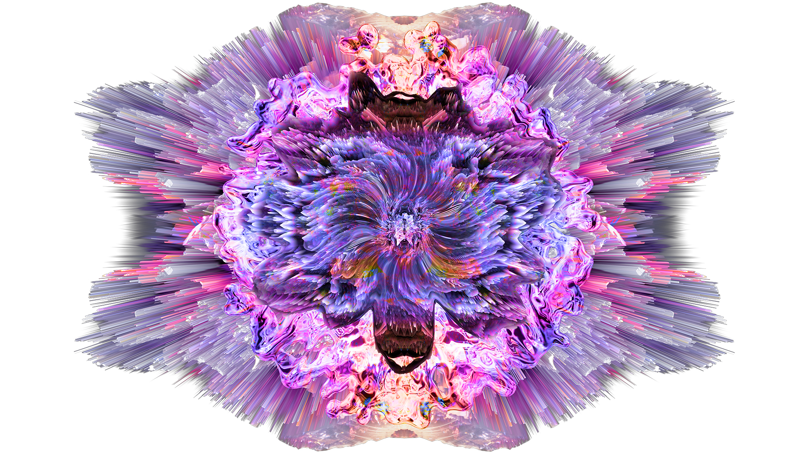

MONTRÉAL.AI FINE ARTS (just around the corner…)
Quebec, Montreal, Vancouver, San Maarten, Beverly Hills, Caesar’s, Panama, Brasil, Paris, Milano, Principauté de Monaco, Geneva, Belgium, Germany, Luxembourg, Spain, Austria, London, Russian Federation, Aspen, Maui, SoHo, Israel, La Jolla, Macau, Dubai, India, Qatar, Saudi Arabia, Beijing, Shanghai, Hong Kong, Tokyo Midtown and Tapei.
Pioneering Legendary Fine AI Arts — Montréal.AI is Presenting a New World Age of Artistic Visions.
Montréal.AI Fine Arts aspires to be world’s most desirable and fast growing fine AI arts brand.

A Legendary History | How It All Began — Learn the source of an exceptional legacy :
We are preparing a worldwide PR campaing with major talk show appearances, a feature film and a TV documentary. We are looking for Ambassadors, Associates & Partners.
A New Day Has Come in Art Industry
- The first AI artwork to be sold in a major auction achieves $432,500 after a bidding battle on the phones and via ChristiesLive — Christie’s
- A sign of things to come? AI-produced artwork sells for $433K, smashing expectations — Allyssia Alleyne, CNN
- Eerie AI-generated portrait fetches $432,500 at auction — Devin Coldewey, TechCrunch
“A spokesperson from Christie’s told us of the market’s excitement as this significant shift. “We can confirm there were 5 different bidders from all parts of the world competing for this lot at that high price level, which seems a good indication of collector interest and future market potential for AI art generally…”“ — Adam Heardman, MutualArt
A Renewal of the High Renaissance Ideals
Montréal.AI believes in seamlessly seing relationships that matter to change the course of the world.

“Nothing is more powerful than an idea whose time has come.“ — Victor Hugo
Montréal.AI Fine Arts exalts the purest creations and presents Legendary Fine AI Art that have the potential to become classics. It is a blending of elements of Art, Culture, and Science in the spirit of Leonardo da Vinci.
Montréal.AI Fine Arts seeks to open the doors to the art movement of the 21st century reflecting the aesthetic diversity, conceptual richness and ‘purist’ form of creativity expressed by the machine.
Montréal.AI Space has a Jewel status in the Montréal.AI Portfolio.
Principia of The Grand Design
A Real Promise of Excellence.
Principia of The Grand Design: «A work anticipated to exceed Dali’s Surrealism».
The Highest in the Hierarchy of …
Montréal.AI Space leverages aerospace engineering, applied artificial intelligence and space science researches for use in spaceflight, satellites, and space exploration on an unprecedented scale.
A new powerful model for a large number of emerging superintelligence giants spreading across a landscape.
“Any Sufficiently Advanced Technology is Indistinguishable from Magic.“ — Arthur C. Clarke
Defining the Genre of AI-Made Fine Art: The Process
A Deep Understanding of the World, People and Human Nature
Aesthetic Diversity and Conceptual Richness
A blending of elements of Art, Culture, and Science in the spirit of Leonardo da Vinci.
Montr√©al.AI Fine Arts is ahead of a trend that will profoundly impact the $350 billion / Year international fashion, fine arts & jewelry industry ( üåê http://www.billionaire.tv/TheGazette.pdf ).
“To identify truly path-breaking work, we would do better to stop asking where the boundary line lies between human artists’ agency and that of AI toolsets, and instead start asking whether human artists are using AI to plumb greater conceptual and aesthetic depths than researchers or coders.“ — Tim Schneider and Naomi Rea, artnet, September 25, 2018
The ‘Purist’ Form of Creativity Expressed by the Machine: Deep Learning + Deep Reinforcement Learning + Generative Adversarial Nets + Meta-Learning + Self-Play + Transfer Learning
We are living in a period of unprecedented breakthroughs in science. Near future advances at the intersection of aerospace engineering and artificial intelligence hold out extraordinary prospects for the future of Mankind.
“The defining art-making technology of our era will be AI.“ — Rama Allen
Montréal.AI Space believes in enhancing Humanity’s well-being by leveraging superintelligence to explore the Stars : The place where we truly belong.
With higher ingenuity, we implements world‐class agents to design breakthrough deep learning algorithms with an understanding of our Universe.
“I think transfer learning is the key to general intelligence. And I think the key to doing transfer learning will be the acquisition of conceptual knowledge that is abstracted away from perceptual details of where you learned it from.“ — Demis Hassabis
Montréal.AI’s superhuman AI agents can learn from experience, simulate worlds and orchestrate meta-solutions.
Montréal.AI Space is offering a new world age of impactful technical prowesses on a truly global scale.
“Of course, particle physicists are among the first to realize that nature is compositional.“ — Yann LeCun
References
- Scaling the Mission: The Met Collection API (406,000 images of over 205,000 CC0 objects) — Loic Tallon, Chief Digital Officer
- What do 50 million drawings look like? — Google
- GAN Lab: Play with Generative Adversarial Networks (GANs) in your browser! Web | Paper — Minsuk Kahng, Nikhil Thorat, Polo Chau, Fernanda Viégas, and Martin Wattenberg
- Generating Memoji from Photos — Pat Niemeyer
- Playing a game of GANstruction — Helena Sarin
- TensorFlow-GAN (TFGAN) — Joel Shor, Sergio Guadarrama
- Progressive GANs | Notebook with smooth interpolations through z-space — Gene Kogan
- Self-Attention GAN Paper | Tensorflow implementation — Han Zhang, Ian Goodfellow, Dimitris Metaxas, Augustus Odena
- Tensorpack | Generative Adversarial Networks — Tensorpack
- Ngx | Neural network based visual generator and mixer — Keijiro Takahashi
- A Few Unusual Autoencoders — Colin Raffel
- Deep Variational Reinforcement Learning for POMDPs — Maximilian Igl, Luisa Zintgraf, Tuan Anh Le, Frank Wood, Shimon Whiteson
- Learning Dexterity — OpenAI
- Robots that Learn — OpenAI
- (Self-Play) | OpenAI Five — OpenAI
- TFHub state-of-the-art AutoAugment Modules — TensorFlow
- Creatability: a new collection of experiments exploring ways to make creative tools more accessible — Experiments with Google
- Evolved Virtual Creatures, Evolution Simulation, 1994 — Karl Sims
- Reinforcement Learning for Improving Agent Design: What happens when we let an agent learn a better body design together with learning its task? Article | Paper — David Ha
#AI4Artists : Unveilling a World of Hidden Secrets ＊
Pioneering Legendary Creations : 75 Minutes Tutorial
Designed for artists, #AI4Artists is created to inspire artists who, with AI, will shape the 21st Century.
“The Artists Creating with AI Won’t Follow Trends; THEY WILL SET THEM.“ — Vincent Boucher, B. Sc. Theoretical Physics, M. A. Government Policy Analysis and M. Sc. Aerospace Engineering
See the Pen Montreal.AI’s Bubble Bath by QuebecAI (forked from Tero Parviainen) (@QuebecAI) on CodePen.
＊ This 75 minutes tutorial is presently in alpha, with a limited number of customers to help us refine it. As we enter beta, we’ll take on many more groups (minimum 150 persons) from the waiting list.
The Building of a Legacy: AI Core Identity
Montréal.AI Fine Arts (finest AI master’s paintings, AI sculptures, and AI grand manner portraitures) captivate a discerning audience. A fascinating, provocative and vibrant poetry . . .
We’re developing a Superhuman RL Agent via Self-Play to create revolutionary designs…
Numbered and Signed Original Print Including Certificate of Authenticity
❖ The Scent of AI (Perfume)
Signed: Montreal.AI
❖ Commissioned AI Fine Arts (Superhuman Luxury)
During the Renaissance, Pope Julius II commissioned painter Michelangelo for artwork of the Sistine Chapel ceiling at the Vatican. Today, high net worth corporations, successful financiers and world’s premier luxury houses may commission AI artwork from Montréal.AI Fine Arts. Signed: Montreal.AI
❖ Collection of Lullabies (Book)
Leather-bound numbered, signed and lettered object of desire.
❖ Many-Worlds Jewelry ( üíé )
A revolutionary line exalting the purest superhuman jewellery designs on a truly global scale. A line as enchanting as the muses it inspires, for the Fashionees who will define the trends of our era. Signed: Montreal.AI

A professional skilled catalyst versed in innovative research, high financial engineering and international luxury scene, Montreal.AI’s Founding Chairman Vincent Boucher received, on the 15th of October 2009, the prestigious Guinness World Records title for his Largest Cut Paraiba Tourmaline.

“Financier (Vincent Boucher) acquires world’s rarest stone.”“ — Mike King, The Gazette
AI.Fashion : A high-level of abstraction and advanced 3D jewellery line, as enchanting as the muses it inspires, for the Fashionees who set the trends of the 21st Century.

Created for the Fashionees who set the trends of the 21st Century, Montréal.AI Fine Arts is causing a huge stir amongst top art collectors and the most brilliant, influential, and iconoclastic figures worldwide and is regarded as the highest in the hierarchy of genres.
For Andre Breton, the father of surrealism, the purpose of Art is the unification of the real and the imaginary. Montréal.AI Fine Arts makes Breton’s dream come true. A truly special celebration in the world of fine arts, fashion and high jewelry and one that is certain to make history!
✉️ Email Us : info@montreal.ai
üìû Phone : +1.514.829.8269
üåê Website : http://www.montreal.ai
üìù LinkedIn : https://www.linkedin.com/in/montrealai
üèõ Headquarters : 350, PRINCE-ARTHUR STREET W., SUITE #2105, MONTREAL [QC], CANADA, H2X 3R4 *Executive Council and Administrative Head Office
#AIFirst #MontrealAI #MontrealAISpace #MontrealArtificialIntelligence